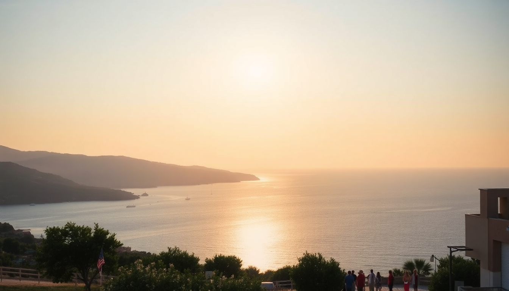

Best Day Trips from Crete: Chania, Rethymno & Elafonisi

We spent a week based in Heraklion and quickly realized Crete is too big to see from one spot. Instead of trying to do everything, we picked three day trips that felt completely different from each other: the Venetian harbor of Chania, the fortress city of Rethymno, and the pink-sand lagoon at Elafonisi. Here’s what actually worked, what didn’t, and how to avoid the crowds.
Why base yourself in Heraklion for day trips?
Heraklion is the most practical hub. The city itself isn’t pretty—it’s noisy, dusty, and the traffic around the port is brutal. But the bus station is central, rental car agencies are everywhere, and the highway (EO90) runs straight west to both Chania and Rethymno. We stayed at Lato Boutique Hotel right on the waterfront, which gave us easy walking access to the bus terminal and the morning ferry docks. From there, we could leave by 7:30 AM and be in Chania by 9.
If you prefer a quieter base, consider Rethymno instead—it’s smaller, walkable, and puts you closer to Elafonisi. But for sheer flexibility, Heraklion wins.
What’s the best way to get from Heraklion to Chania?
Drive or take the KTEL bus. Driving takes about 90 minutes on the new national road (toll is around €2.50 each way). The bus from Heraklion’s main station to Chania’s central station costs about €8 and runs hourly. We drove, and I’d recommend it—the coastal views just past Souda Bay are worth pulling over for.
Once in Chania, park at the public lot near the Old Harbor (Pyrgos Park, €3/hour). Don’t try to drive into the old town—the streets are barely wide enough for a scooter.
What should you actually do in Chania?
Skip the Archaeological Museum unless you’re a specialist. Instead, spend your time in the Old Venetian Harbor. Walk the entire curve from the Firkas Fortress to the lighthouse jetty. The lighthouse is free to walk out to, and the view back over the harbor is the best photo you’ll get without paying for a boat tour.
For lunch, skip the tourist traps with laminated menus on the harbor. Walk two blocks inland to To Stachi on Kondilaki Street—they do a wild mushroom pie and a Cretan salad that’s actually local, not just rebranded Greek salad. If you want seafood, Thalassino Ageri on the far west side of the harbor is the real deal. We had grilled octopus and a bottle of local white wine for €30 total.
- Firkas Fortress — free entry, great views, small maritime museum inside
- Lighthouse jetty — 15-minute walk out, windy, go early
- Old Town alleys — get lost between Skoufon and Zambeliou streets
- Municipal Market — good for dried herbs and olive oil, not souvenirs
Is Rethymno worth the stop on the way to Elafonisi?
Yes, but only if you have a full day. Rethymno sits roughly halfway between Heraklion and Chania, so it’s a natural break. But it’s not a quick stop—the old town deserves at least three hours.
The Fortezza Fortress dominates the hill. Entry is €4, and it’s worth it for the shade and the wind. Inside, there’s a small mosque and a theater that still hosts summer performances. Don’t expect manicured gardens—it’s mostly rubble and stone, but the views over the Libyan Sea are unmatched.
After the fortress, walk down through the Venetian Harbor and into the old town’s main drag, Arkadiou Street. It’s touristy, but the side alleys are quiet. We found a tiny bakery called Bakalogiannis on Nikiforou Foka Street that sold cheese pies still warm from the oven—€1.50 each.
For a real meal, Avli on Xanthoudidou Street is a garden restaurant that does Cretan rabbit stew and stuffed vine leaves. It’s pricier than the harbor spots, but the food is actually cooked with care.
- Fortezza Fortress — 3-hour visit, bring water
- Venetian Harbor — good for a coffee, skip the restaurants
- Arkadiou Street — shopping street, haggle for leather sandals
- Neratze Mosque — now a music venue, check if there’s a concert
How do you actually get to Elafonisi Beach?
This is the trickiest day trip. Elafonisi is a small island connected to Crete by a shallow sandbar. It’s about a 2-hour drive from Chania, or 3 hours from Heraklion. The road is narrow and winding after Kissamos—allow extra time.
We drove from Rethymno. The last 20 kilometers are slow, single-lane roads through olive groves. Parking at the beach fills up by 10 AM. We arrived at 9:30 and got one of the last spots in the main lot (€5 for the day). The overflow lot is a 15-minute walk uphill.
The beach itself is stunning—pink sand (crushed shells, not actually pink dye), shallow turquoise water, and a long sandbar you can walk across to the island. But it’s not a secret. By noon, the beach is packed. Bring your own umbrella and snacks—the only taverna on site, Elafonisi Beach Bar, charges €8 for a club sandwich that tastes like cardboard.
If you want fewer people, walk south along the beach past the main strip. There’s a quieter stretch near the Church of Agia Paraskevi where families don’t go because the water gets deeper faster.
- Sandbar crossing — do it early before the tide rises
- South side of the island — quieter, better for snorkeling
- Elafonisi Beach Bar — overpriced, but the only option
- Parking lot — fills by 10 AM, arrive early
When is the best time to do these day trips?
Late May and September are ideal. June through August is hot (35°C+ inland) and crowded. We went in early June, and Elafonisi was busy but not unbearable. Chania’s harbor was packed by 11 AM.
If you’re here in July or August, reverse your schedule: do Elafonisi on a weekday (parking is worse on weekends), and visit Chania and Rethymno in the late afternoon when the cruise crowds leave. The fortress in Rethymno stays open until 8 PM in summer.
FAQ
Can you do Chania and Elafonisi in one day from Heraklion? Technically yes, but I wouldn’t. It’s a 7-hour round trip drive with beach time. You’ll spend more time in the car than on the sand. If you only have one day, pick Chania for culture or Elafonisi for swimming—not both.
Is the pink sand at Elafonisi really pink? It’s a pale blush, not bubblegum pink. The color comes from crushed foraminifera shells. It’s most visible in the wet sand near the waterline at sunrise. By midday, trampling makes it look like regular beige sand.
Should I rent a car or take the bus? Rent a car. The KTEL buses are reliable for Chania and Rethymno (€8-12 each way), but the Elafonisi bus only runs twice a day in summer and drops you at the main lot. With a car, you can park at quieter spots and stop at Kissamos for lunch at Taverna To Kyma—they do the best grilled sardines on the west coast.
Conclusion
- Base in Heraklion for flexibility, but stay at Lato Boutique Hotel for easy bus and car access.
- Drive yourself to Chania and Rethymno—buses work, but a car lets you stop at Souda Bay viewpoints and Kissamos for lunch.
- Hit Elafonisi before 9 AM or skip it entirely in July/August.
- Rethymno’s Fortezza Fortress is the best value attraction in the region (€4, no crowds).
- Don’t try to do all three in one day—pick two max, or stretch them over three separate days.